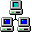
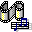
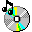

Recycle Bin

HRUMF NetCASE FILES
CLEARANCE

FOUND FOOTAGE
COLD STORAGEDOLOS WATCH
HUFFLE_BIOLOGY.DOC — WordPad
FileEditViewInsertHelp
HRUMF · SEEKER DIVISION · PUBLIC BIOLOGICAL BRIEF 04-APREPARED FOR PUBLIC RECORD · 2025 EDITION
HERO PORTRAIT — ONE HUFFLE
The trinity on display: round potato frame, stubby limbs, huge black glossy eyes. One lived-in "borrowed" accessory. Wildlife-doc lighting.
470 × 520
SPECIMEN 01
After twenty-five years of study, the honest truth: we still don't know where Huffles come from, or why they're here. What we have proven is stranger.
■ IndestructibleNo Huffle has ever been cut, pierced, or injured. Ever.
■ AgelessNo Huffle has ever been recorded dying of old age.
■ Doesn't eatIt feeds on something else: belonging. Kindness. Being part of something.
■ Emotional bodyIts biology runs on feelings. Visibly. Measurably.
⚠ CORE MECHANIC — THE THING TO REMEMBER
A Huffle that feels loved is calm. A Huffle that feels alone is not.
MULTIPLY
1 sad Huffle → cocoon → 2 small
300×160
MERGE
2 happy Huffles → cocoon → 1 larger
300×160
HEART-ORGAN · X-RAY
the hum grows/shrinks with mood
300×160
A world that mistreats its Huffles makes more Huffles.
That one fact is the engine the entire universe runs on.
SEEKER DIVISION · FILE 04-APAGE 1 OF 1